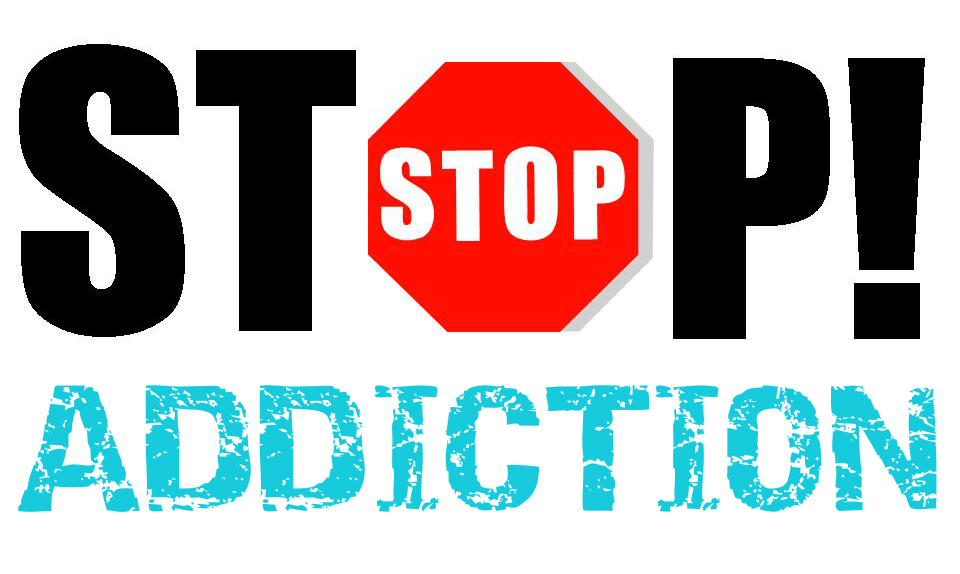

Effect of smoking on the body
Brain
If you smoke, you are more likely to have a stroke than someone who doesn't smoke.
In fact, smoking increases your risk of having a stroke by at least 50%, which can cause brain damage and death. And, by smoking, you double your risk of dying from a stroke.
Circulation
When you smoke, the toxins from cigarette smoke enter your blood. The toxins in your blood then:
- Make your blood thicker, and increase chances of clot formation.
- Increase your blood pressure and heart rate, making your heart work harder than normal.
- Narrow your arteries, reducing the amount of oxygen rich blood circulating to your organs.
Together, these changes to your body when you smoke increase the chance of your arteries narrowing and clots forming, which can cause a heart attack or stroke.
Heart
Smoking damages your heart and your blood circulation, increasing the risk of conditions such as coronary heart disease, heart attack, stroke, peripheral vascular disease (damaged blood vessels) and cerebrovascular disease (damaged arteries that supply blood to your brain).
Effect of smoking in socal life
While for some, smoking can be a way to socialise and connect with others, it definitely has its drawbacks.
- Social stigma and isolation - some smokers feel that they are being looked down on. As smoking rates decline, many people do not want to be exposed to other people's’ smoke and are intolerant of smoking. This social unacceptance is likely to increase as the number of smokers continues to drop.
- Lack of freedom - having to worry about where you can go and whether you can smoke. This will intensify as smoking restrictions increase.
- Feeling that you’re not in control of your life - having to organise daily living around smoking. This might include spending more money than you can afford on cigarettes; feeling unwell and unclean; and not being fit as you would like to be.
How to quit?
Quitting smoking is the single most important step a smoker can take to improve the length and quality of his or her life. Stopping smoking can be tough but smokers don't have to quit alone. The American Lung Association has lots of options to help smokers quit smoking for good.
- Freedom From Smoking
- To help adult smokers quit, the American Lung Association offers Freedom From Smoking®. The program teaches the skills and techniques that have been proven to help smokers quit. Freedom From Smoking® is available as a group clinic, an online program and a self-help book. You can also speak to a cessation counselor at the Lung HelpLine.
- Quitter's Circle.
- With a robust online community and mobile app, Quitter's Circle is a smoking cessation initiative. Developed in collaboration between the American Lung Association and Pfizer, Quitter's Circle allows users to personalize a quit plan and access resources to connect with a healthcare provider about quitting, and encourages a circle of friends and family to lend support and encouragement along the way.
Personal experiences
Gail C. Berreitter.
"It is absolutely amazing how your whole outlook on life changes when you quit smoking. Your self-esteem gets so much better and you want to take those feelings and do other healthier things for yourself."